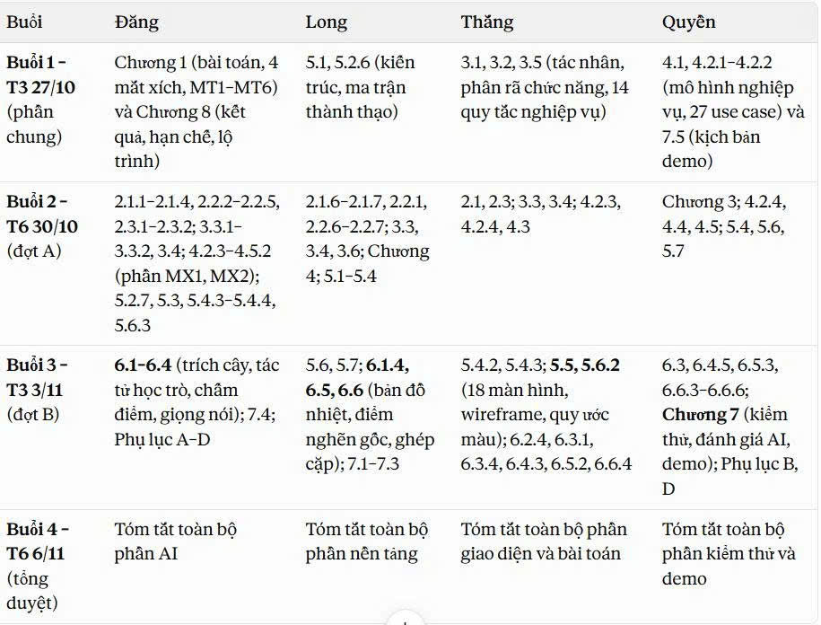

Long
Mục lục ôn tập
Phần nền tảng (C2). Mỗi mục một trang, chỉ giữ ý quan trọng và vài ví dụ nghịch được.
Buổi 1 · T3 27/10 · phần chung
- 5.1Kiến trúc tổng thểKhối đơn mô-đun, worker nền, bus sự kiện; việc nhẹ và việc nặng.
- 5.2.6Ma trận thành thạoMỗi ô một dòng; MX2 ghi, MX3 đọc cột, MX4 đọc hàng.
Buổi 2 · T6 30/10 · đợt A
- 2.1.6Học đồng đẳng và ZPDChỉ ghép nội dung vừa tầm, tức Biên của người học.
- 2.1.7Không gian tri thứcTrạng thái khả dĩ do tiên quyết quy định; Biên là nút học tiếp ngay.
- 2.2.1DAG, sắp xếp topo, bắc cầuKahn, DFS ba màu, rút gọn cạnh thừa.
- 2.2.6Ghép cặp trọng số cực đạiBlossom O(V³); vì sao tham lam không đủ.
- 2.2.7Giao tiếp thời gian thựcWebSocket và Redis Pub/Sub.
- 3.3Yêu cầu chức năng51 yêu cầu, 5 phân hệ, ưu tiên M, S, C.
- 3.4Yêu cầu phi chức năng14 chỉ tiêu: nhanh, AI đáng tin, bảo mật, riêng tư.
- 3.6Truy vết yêu cầu tới Use Case5 nhóm yêu cầu trải trên 27 UC.
- Ch. 4Phân tích hệ thốngNghiệp vụ, Use Case, hoạt động, tuần tự, trạng thái, lớp.
- 5.2Thiết kế dữ liệu30 bảng, lưu đồ thị tiên quyết, các bảng cốt lõi.
- 5.3Thiết kế lớp và mẫu thiết kếBảy mẫu: Adapter, Facade, Strategy, Chain, State, Observer, Repository.
- 5.4Thiết kế APIQuy ước, endpoint theo vai trò, kênh WebSocket.
Buổi 3 và 4
Ghi chú thêm

Lịch 4 buổi họp và phân công mục.